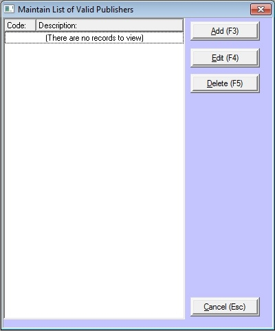

The Publishers section of Bookscan allows for you to maintain the different publishers you can use within the system.
To maintain Publishers on the main menu click on Tables,then point to Authority Tables and then click on Publisher

Note: To successfully load publisher details when importing from title page, ensure the publishers appear within this window.
Add
To add a new Publisher, click on the Add button.
Enter the following:
Publishers Code (4 characters)
Publishers Name
Publishers Role (Select from drop down) optional
Click the OK button.
Edit
To edit an existing Publishers click on the currency and click the Edit button
You can make changes to:
Publishers Name
Publishers Role (Select from drop down) optional
Click the OK button.
Delete
To delete an existing Publisher click on the Publisher and click the Delete button
Click the OK button, and then click the Yes button.
Close
To exit the Publisher section, click this button.